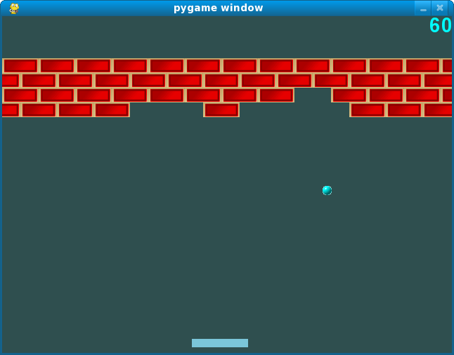
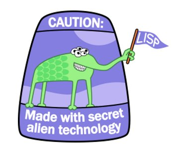
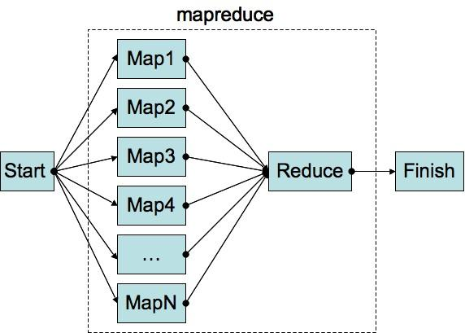
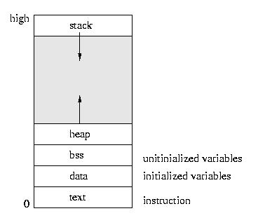

I am an undergraduate computer science student heading into my senior year at Cornell University.
I'm actively seeking full-time software engineering roles that begin in the summer of 2017, particularly those with a focus on machine learning. The impact that this field has had across all industries in the past couple of years is startling and I'm excited to see where it can go from here.
Credit Suisse
June 2016 - Present | New York, NY
I'm excited to be working in the Product Control IT department this summer. I'm creating an Angular-driven front-end dashboard where people can monitor Credit Suisse's JMS usage. In addition, I am making an XML database API that other developers will use to create an application to perform health checks on major internal applications.
Workday
May 2015 - August 2015 | Pleasanton, CA
I worked on the Automated Testing team developing an application that improves the debugging experience for app developers. It has a totally revamped user interface and much faster load time. Learned new technologies including MongoDB and Google Web Toolkit. Worked with lists and stacks; asynchronous code; and recursive tree traversal algorithms.
Cardiopulmonary Corp
May 2014 - August 2014 | Milford, CT
I developed a Cisco Phone application that doctors and nurses can use to (1) View current patient assignments, (2) Change assignments, (3) View alert history, and (4) Transfer assignments to a co-worker. Learned new technologies including SQL; GET and POST protocol; and C#.

Snowball Breakout
Fall '13 | Python
Implemented the game using a Model-View-Controller pattern. To make it a snowball fight, every time the ball hit a brick (which was designed like a snow fort), a snowball would come firing down at the paddle and if it hits the paddle, you lose a life.
Connect Four AI
Spring '14 | Java
Set up a minimax algorithm to choose the play Connect 4 effectively. Evaluated to a depth of 5.

Lisp Interpreter
Fall '14 | OCaml
Built an interpreter for a simplified version of Scheme, a Lisp Language. The language has the ability to create functions, assign variables, and perform mutually recursive procedures.

MapReduce
Fall '14 | OCaml
Used the Async OCaml library to facilitate multiple cores mapping computations to an intermediary state. When all of the computations had finished, a core would compile all of the results into the desired answer. Also made applications that could run on this paradigm. (i.e. finding all common friends given an undirected graph of people)
Pokemon Trainer
Fall '14 | OCaml
Set up a game that allowed bots to draft pokemon and then battle them against each other. The best part was making the bot. Our bot's general strategy was to draft above-average pokemon of various types and optimize the pokemon type matchup.

Honeypot
Spring '15 | C
A honeypot is a security mechanism used to track and prevent unwanted packets from corrupting a system. This implementation uses a core to collect packets in a ring buffer, classify them, and send them out to another core that tracks statistics for each type of packet.
Photo-Stories Site
Spring '15 | HTML, CSS, PHP, JS
A social media website allowing people to upload pictures and write stories about what's going on in the pictures. Each user has a profile and there's a main feed that has all of the best-liked stories from the recent past.

Malloc Replication
Fall '15 | C
Designed and implemented a system that replicates how memory allocation works. Each block of memory had a header that indicated the size of the memory block and had a pointer to the next block. Memory was allocated using a first-fit selection.
Email Server
Fall '15 | Python
Incoming SMTP connections are handled by a main thread and passed off to a thread pool. The threads process the emails in the order they came in and are stored in .txt documents that each store 30 emails.
A little bit about me
Sports have had a huge role in my upbringing. I played hockey, soccer, and Gaelic Football throughout my childhood and continue to play in adult hockey and Gaelic Football leagues.
I'm consistently on Business Insider, ESPN FC, and WaitButWhy. For heavier reading, I enjoy biographies and sociology books.

I've been singing since before I remember. I sang in two bands and started doing a cappella in high school. At Cornell, I was Musical Director for Cayuga's Waiters for a year and am now Leader.
I like anything from singer-songwriters Eric Hutchinson and Ed Sheeran to rappers Kanye West and Chance the Rapper to DJs Odesza and Kygo.
Settlers of Catan, Monopoly, Risk, Axis vs. Allies, Setback, Solitaire... Basically I love board/card games. And FIFA.
And here's my resume